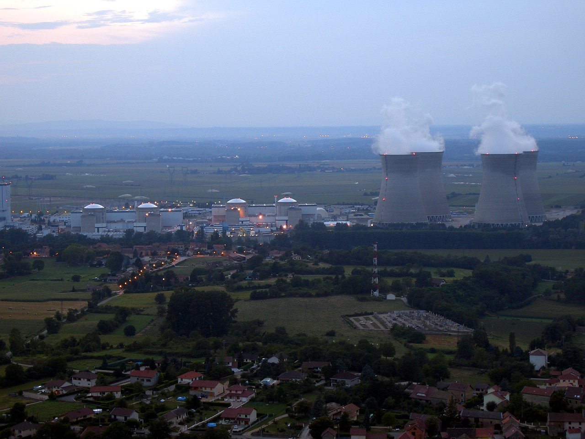
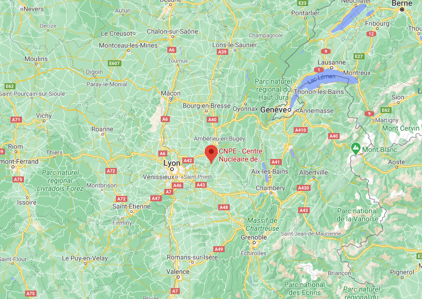
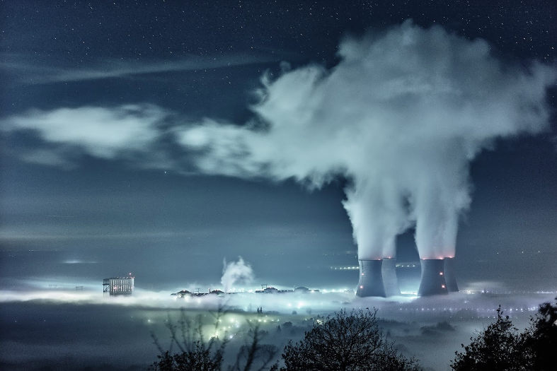
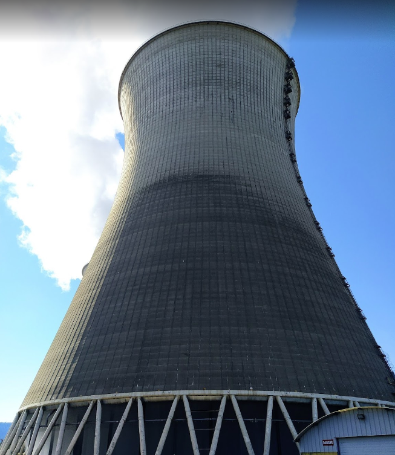
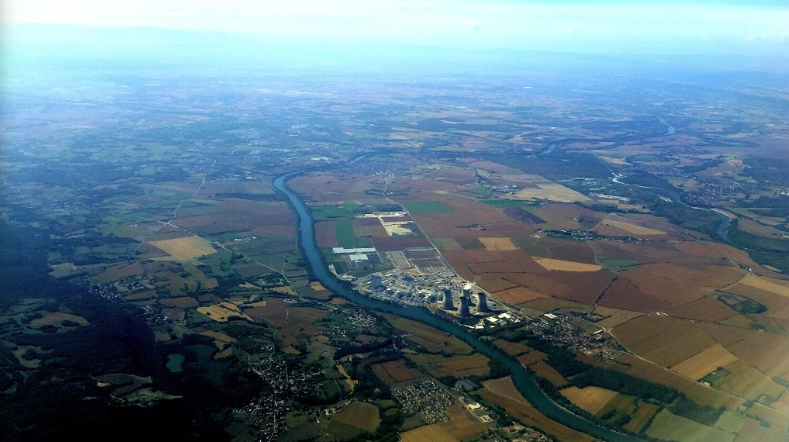
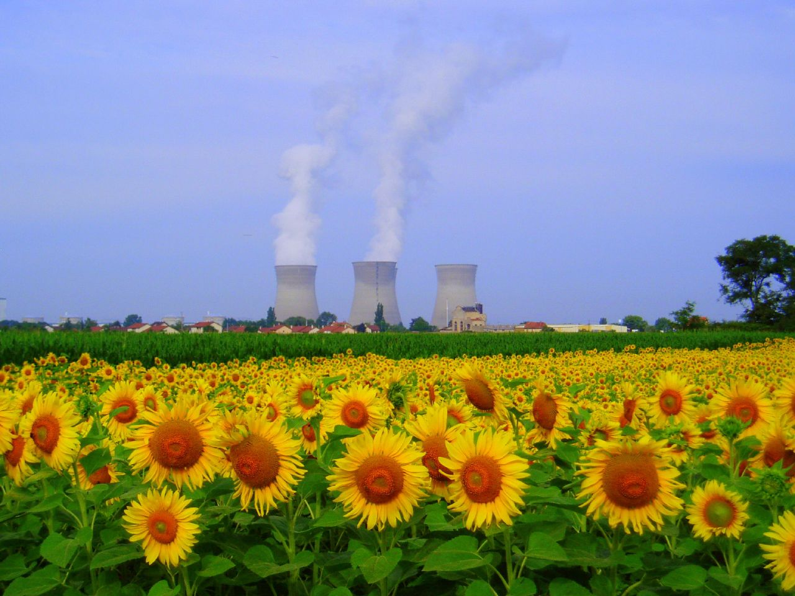
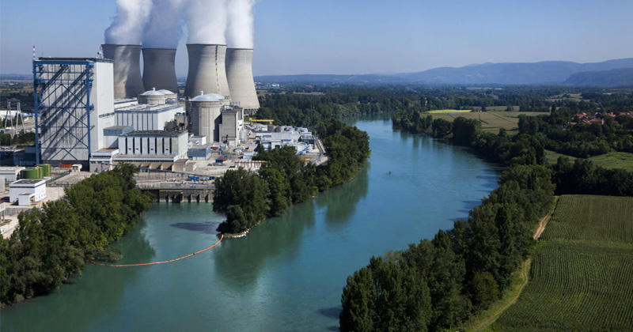

Ah ! La France, quel beau pays. Quelles que soient ses contrées, le territoire français dispose de réacteurs nucléaires. Ainsi, la France produit une électricité bas carbone, compatible avec nos engagements vis-à-vis des accords de Paris sur le climat. Imaginer que la France pourrait effectuer une transition écologique complète sans le nucléaire serait sot. Effectivement, l’atome permet la production d’électricité avec 6 g équivalent CO2 par kWh. Cela fait que la France, si l’on fait la moyenne, émet par kWh 55 g équivalent CO2 alors que nos amis les Allemands émettent en moyenne 420 g équivalent CO2 par kWh. Quant aux Espagnols, ils émettent 238 g par kWh et enfin les Polonais émettent 781 g par kWh. En plus de n’emmètre quasiment pas de gaz carbonique dans l’atmosphère, la France peut, grâce à son industrie nucléaire, se passer du charbon (1 % en 2019) et éviter les 200 000 décès occasionnés par le charbon outre-Rhin. Le nucléaire ne sert pas qu’à éviter des morts ni à protéger l’environnement, mais à aider la France sur le plan géopolitique. Ainsi, il ne vous aura pas échappé que la France n’est pas bien dotée en hydrocarbures sauf peut-être le charbon qui n’est plus exploité. Le nucléaire lui permet de ne pas dépendre d’autres pays pour assurer son indépendance énergétique. Le nucléaire ne s’arrête pas à l’électricité. Il permet de propulser les sous-marins français et aussi de faire naviguer notre porte-avions le Charles-de-Gaulle ainsi que son successeur. Et puis quand mme une centrale nucléaire, c’est quand même ultra stylé non ?
Que ce soit pour le patriotisme, l'écologie, l'économie, la santé ou la stratégie, nous avons tous une raison de supporter le nucléaire et nos ingénieurs talentueux qui œuvrent à son bon fonctionnement.
ÉCO2Mix : Site de RTE pour suivre le réseau électrique.
ElectricityMap : pour suivre l'intensité carbone de la production électrique en direct pour chaque pays.



La fumée sortant des tours de refroidissement (aéroréfrigérants) n'est qu'en fait de la vapeur d'eau, fabricant de jolis flocons lorsque le mercure descend en dessous de zéro.




-
Police d'écriture : Montserrat - Google Sans
Jetez un coup oeil à StopCivaux.fr
Page éditée par Pierre-Gilles Chenu
Contact : me[at]pierregilleschenu.fr